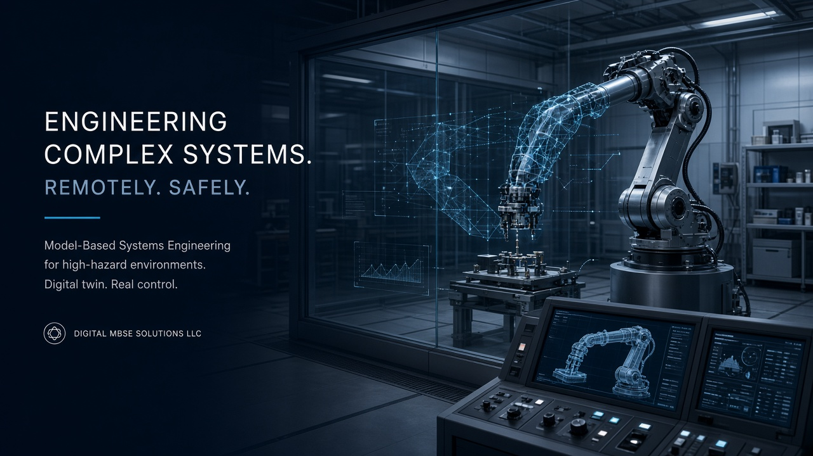
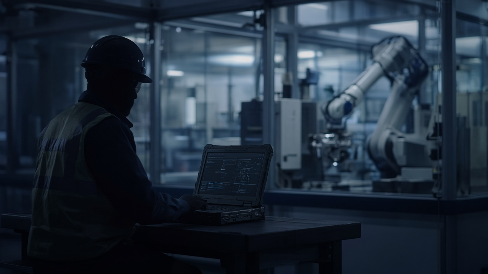

Forward deployed engineering services
On-site / closely embedded systems, software, V&V, and MBSE support for labs and operators integrating robots into constrained, high-consequence cells — without inventing a multi-year internal team from scratch.
Forward Deployed Engineering · RaaS · digitalmbse.com
Digital MBSE Solutions LLC pairs forward deployed engineering services with robot-as-a-service (RaaS) to accelerate safe robot integration into research labs, laboratory facilities, hot cells, remote-handling environments, clean rooms, and adjacent next-generation nuclear plant remote-maintenance programs — using edge sensing, live digital twins, and AI-in-the-loop training behind test-driven promotion gates.

Embedded engineering capacity where the work happens — plus a RaaS path for sensing, twin, and gated autonomy.
On-site / closely embedded systems, software, V&V, and MBSE support for labs and operators integrating robots into constrained, high-consequence cells — without inventing a multi-year internal team from scratch.
Rapid integration of robots into research labs, laboratory facilities, and high-hazard cells, with edge/high-speed sensing, a live digital twin, and AI-in-the-loop training under test-driven promotion gates (teleop + autonomous).

Forward deployed means architecture, integration, and V&V happen where the constraints are real — not only in slideware.
Teams that need robots working reliably in constrained, high-consequence environments.
Research labs and laboratory facilities introducing or expanding robotic remote handling under real safety and operational constraints.
Hot cells, remote-handling cells, and clean rooms where teleoperation and autonomy must earn trust before promotion.
Adjacent programs exploring remote maintenance for advanced nuclear plants — early-stage, capability-driven engagement.
In-house additive manufacturing and systems engineering consulting that reinforce forward deployed / RaaS work.
In-house FDM printer farm for fixtures, jigs, brackets, and rapid iteration supporting robotics integration.
Explore Additive →MBSE, architecture, HIL/SIL, V&V, and safety-critical SE for medical device and nuclear contexts — aligned with forward deployed engineering services.
Explore Consulting →Robot hardware is available. Getting it into real cells — safely, observably, and with a path from teleop to autonomy — is not.
Cell geometry, tooling, sensing, and procedure constraints force one-off engineering. Schedule risk compounds when each site restarts from scratch.
High-hazard work cannot jump from demo to unsupervised motion. Operators need teleop, digital twin visibility, and gated promotion of AI behaviors.
Without edge/high-speed sensing and a live digital twin, remote operators and engineers lack the shared operational picture required for safe remote handling.
Industrial robot integrators and consumer robotics teams rarely bring deep nuclear / medical / safety-critical software experience into the cell.
Forward deployed engineering wraps a three-layer product stack: sense the cell, twin it live, and train AI behind test-driven gates.
Capture the operational state of the cell and robot at speeds suitable for remote handling and closed-loop awareness.
Maintain a living model operators and engineers can use for situational awareness, rehearsal, and post-run review.
Train with human-in-the-loop teleop and autonomous modes; promote behaviors only through test-driven gates — not vibes.
Details: Capabilities · Delivery model: Approach
An experienced team that has built safety-critical robotics and software in regulated, high-consequence industries.
We are actively seeking design partners for forward deployed engineering and RaaS collaboration — teams who want to build alongside us.
Forward deployed engineering, RaaS, additive, or systems consulting — tell us about your cell, constraints, and timeline.
Go to Contact